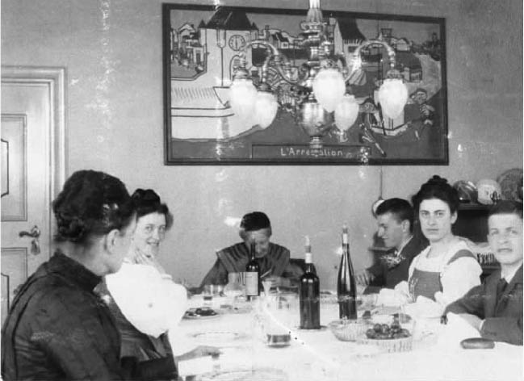
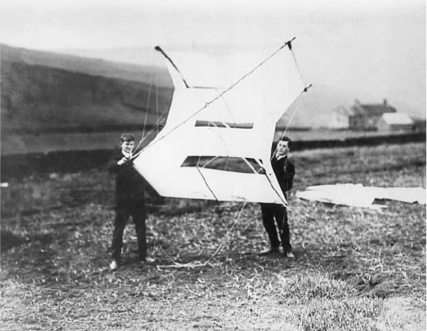
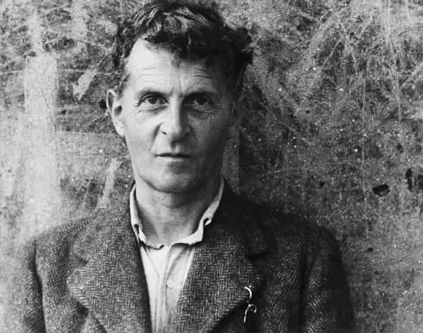

路德维希·维特根斯坦是一位哲学家。哲学在20世纪已经成为只有专家们才去研究的对象，因此大多数近年来获得声誉的哲学家只在他们的同事中间闻名。然而维特根斯坦的名声却远远超越了哲学的界限。在不治哲学的人们当中，提及他的名字的次数多得惊人，听到他的名字的场合也各自不同，同样令人惊讶。在许多人眼中，他被认为是20世纪哲学的典型代表，好像他不仅在其著作中而且在人格上都体现出哲学本身的面目：难解而深邃。也许由于这个缘故，他著作中的内容常被人随便取来当作警句。这些内容之所以被人这样使用，是由于其文体风格和结构的适宜，也因为似乎可以从中提炼出某些智慧。
许多当代哲学家认为维特根斯坦是20世纪最伟大的思想家，外行人对他的评价就由此而来。这种评价是否正确仍然要由历史来决定；同行人的判断并不一定永远正确。然而不管结论如何，都无法改变这一事实，即维特根斯坦的生平和思想无论如何都是非比寻常的。
路德维希·约瑟夫·约翰·维特根斯坦于1889年4月26日出生在维也纳，在家中排行第八，最为年幼。他的父亲是一位实业家，也是奥地利最富有的人物之一；维特根斯坦一家的宅院是维也纳人社会和文化生活的一个中心。
维特根斯坦家族父系和母系历代都以家道殷实和教养良好著称。他的祖父是来自黑森的一位富有的犹太羊毛商。他改信基督教中的新教，娶了一位维也纳银行家的女儿。其后不久他便把经营中心转移到维也纳，在该地他和妻子成了艺术赞助家。他们让儿子卡尔（路德维希·维特根斯坦的父亲）接受花费昂贵的古典式教育，但是卡尔拒不从命，十七岁离家奔赴美国，有两年靠在饭馆服务以及教小提琴和德文课为生。回到维也纳后他开始学习工程学。除了继承的遗产，他在几十年间由于成功经营钢铁工业而增添了大量财富，跻身奥匈帝国最重要的实业家行列。他在过了五十岁不久便退休，用一些时间给维也纳报刊撰写经济学方面的文章。
尽全力鼓励全家从事文化和音乐活动的是维特根斯坦的母亲莱奥波尔迪娜。她也是一位银行家的女儿，同施蒂里亚的地主乡绅有着亲戚关系。她的音乐兴趣颇为浓厚。受她的邀请，勃拉姆斯和马勒是家中常客；在她的鼓励下，维特根斯坦的兄长保罗成了一名音乐会钢琴演奏家。保罗在第一次世界大战中失去一只手后，拉威尔和施特劳斯参与为保罗写出独手演奏的协奏曲。维特根斯坦本人也具有很好的音乐天赋。成年后他曾自学吹奏单簧管，但是他最突出的音乐才能却表现在全凭记忆用口哨吹奏出整篇乐谱的能力上。
莱奥波尔迪娜·维特根斯坦信奉罗马天主教，所以维特根斯坦也是在这种宗教信仰的氛围中成长起来的。宗教是他一生始终强烈关注的主题。有好几次他曾认真考虑去当修道士。然而他的宗教观点却不是正统的，到底是什么信仰他也从未讲出。在他的著作中透露过一些与此相关的暗示。

图1 维特根斯坦一家在霍赫莱特住宅餐桌前（自左至右）：女仆罗莎莉·赫尔曼、赫米内、祖母卡尔穆思、保罗、玛格丽特、路德维希。
也许是由于自己切身的经验，卡尔·维特根斯坦的教育观点很是奇特。他让自己的孩子都在家里受教育，课程全由他自己安排，直到十四岁为止。这项计划并不成功。到了维特根斯坦该上学的时候，他竟进不了维也纳的高级中学 （相当于文法学校）甚至实科学校（ 相当于现代中学），因为他达不到所要求的标准。最后他通过了林茨一所省立实科学校的入学考试，在那里上学的还有一个同龄人阿道夫·希特勒。维特根斯坦在该校度过了三年不愉快的时光，1906年离校时并未取得升进大学的资格。这是一次挫折，因为他曾有在维也纳跟博尔茨曼学习物理的志愿。然而他一直表现出工程学方面的天资，这是他父亲的专业；据说他在童年就制作出一种缝纫机的模型，证明他有这方面的才能。因此他的父母便将他送进柏林——夏洛滕堡的一所工艺学院。
维特根斯坦在那里生活得也不愉快，三个学期之后便离开了这所学校。然而他却对航空工程产生了兴趣，这是他未来职业的一条最新发展途径。他于1908年前往英国，当年夏天在德比郡靠近格洛瑟普的高空大气层研究站进行风筝飞行试验。当年秋季他进了曼彻斯特大学学习航空工程。

图2 1908年夏路德维希·维特根斯坦在去曼彻斯特大学学习航空工程之前同威廉·艾克尔斯在德比郡格洛瑟普风筝试验站。
维特根斯坦的名字留在曼彻斯特大学的学生名册上有两年之久，尽管其间大部分时间他都在欧洲大陆。在曼彻斯特停留后期，他正致力于设计一种在桨片尖端装有喷气嘴的螺旋桨。他对这种设计所涉及的数学问题产生了兴趣，接着又转向数学本身，最后则被关乎数学基础的哲学问题所吸引。他问自己认识的人关于这门学科可以读些什么书，有人便让他去读罗素的《数学原理》。该书对维特根斯坦产生了很大的影响。此前他所读的哲学书很有限；他读过叔本华的某些著作，此外就很少了。罗素这本书使他了解到逻辑和哲学的最新发展，促成这些发展的正是罗素本人和戈特洛布·弗雷格。维特根斯坦对这些思想极感兴趣，决心进行研究。1911年他到耶拿大学面见弗雷格，把自己的一篇文章交给他看，请求指导。弗雷格建议他到剑桥师从罗素。因此维特根斯坦便在1912年早些时候到了剑桥，注册入学。
维特根斯坦在剑桥只待了五个学期。然而这却是一段对他成长影响最大的时期。他同罗素讨论逻辑和哲学，后者在当时写的一封信中讲到他时说，“（他是）继摩尔之后我遇到的最有才能的人”。维特根斯坦与罗素很快便不再是师生关系，虽然维特根斯坦的朋友戴维·平森特在日记中说，“很显然，维特根斯坦是罗素的信徒之一，从他那里得到很多教益”。然而正如我们将看到的，这种得到教益的影响并不全是单向的。
维特根斯坦很喜欢旅行。1913年他同平森特第一次去冰岛，然后又去挪威。挪威深深吸引了他，这一年晚些时候他自己又返回挪威。他在靠近肖伦一个农庄的偏僻角落自己修建了一间小屋。除了一度去维也纳短暂停留过圣诞节之外，他在此一直居住到1914年夏天。他把住在小屋内的时间专用于研究逻辑。G.E.摩尔曾来此探望他，并在停留期间记录下维特根斯坦的一些研究工作。这项工作代表了后来发展为维特根斯坦第一本著作《逻辑哲学论》的研究进程之最初阶段。
1914年大战爆发时，维特根斯坦正在维也纳家中。不出数日他便应征加入奥匈帝国军队。其后两年大部分时间他都在东线服役，当一个炮兵装配组的机械师，先在克拉科夫，后又转到里沃夫。1916年他被送往奥尔米茨接受军官培训。在那里他遇到了保罗·恩格尔曼，他们一起讨论宗教问题；恩格尔曼后来发表了关于他们两人友好关系的记载，从中可以看出宗教问题对于当时的维特根斯坦有多么重大的意义。
1917年维特根斯坦重返他的兵团当炮兵观测员。1918年早些时候他被派往南线的蒂罗尔，在一个山地炮兵团中服役。当十一月间奥匈帝国的战争努力失败时，驻守在南方的帝国军队大部分（包括维特根斯坦本人在内）被意大利人俘虏。维特根斯坦被关押在蒙特卡西诺附近，直到1919年下半年。
战争至少在两个方面对维特根斯坦产生了重大影响。一方面战争使他在人生观上有了深刻改变，特别是关于财产和生活方式。战前他父亲留给他一份可观的财产。正如人们可以料想的那样，此前他过的是一位出手大方的百万富翁之子的生活。举个实例，据说有一天他误了一趟从曼彻斯特开往利物浦的火车，他便立即设法去租一部专列，这在当时只有富人才能做到。此外，照平森特的记载，他们去冰岛的旅行（由维特根斯坦负担费用）场面盛大，随行人员前呼后拥，招来其他旅游者的讥讽。并且，战前维特根斯坦在挑选领带上看来也十分讲究。战后所有这一切都变了。维特根斯坦把他的全部财产都分给了他的兄弟姐妹，他的看法是：他们已经富有，再多的钱也不会使他们腐化。此后他便过着十分简朴的生活，不要一点装饰，特别是几乎没再打过领带。
产生这些变化的理由并不十分清楚。可能与在东线上发生的一件事情有关，即1915年上半年某个时候，他得到并阅读了托尔斯泰关于福音书的论述——《福音书简释》而深受感动。（后来在他阅读福音书原文，发现有些不同时，他似乎还得让人说服才相信福音书比托尔斯泰的文本更高一筹。）也可能是军队生活的严肃简朴正适合他的气质；正如他在挪威的独居生活所表明的那样，他在战前就显露出倾向苦行的痕迹，而军队生活的经验可能加强了这种倾向。维特根斯坦的书信以及记录下来的谈话至少表示他隐约感到自己罪孽深重（可能是由于他的同性恋倾向），因而他总是愿意苦修。不管理由是什么，当他在1919年离开战俘营的时候，看得出来他已经成了一个不同寻常甚至古怪的、经常容易动怒的人，他的后期生活已由一些主要的回忆录作者充分加以描述。
第二件重大的事情是维特根斯坦被俘时身上背包中有他的著作《逻辑哲学论》（Logische-Philosophische Abhandlung ）的手稿，英语读者所知道的书名则是Tractatus Logico-Philosophi－cus [这是摩尔仿照斯宾诺莎的《神学政治论》（Tractatus Theo－logico-Politicus ）而取的书名]。维特根斯坦在战争岁月中一直在写这本书，最后在蒙特卡西诺战俘营中完成。他在那里有幸遇到一位对逻辑深感兴趣的人，后者可以充当维特根斯坦讨论自己思想的伙伴。
1919年早些时候维特根斯坦设法从意大利寄信给罗素，告诉他《逻辑哲学论》已经写成，甚至还靠约翰·梅纳德·凯恩斯的影响给他送去一份手稿的抄本。从战俘营释放后，维特根斯坦为出版这本书曾做了多次努力，但均告失败。绝望之下，他把这件事托给了罗素。罗素终于通过答应写一篇导言来促成出版。《逻辑哲学论》德文本于1921年出版，英译本于1922年出版。维特根斯坦看到罗素的导言后生气了，他抱怨说尽管他和罗素1919年晚些时候在荷兰见面时曾逐行讨论过这本书，罗素还是误解了他的观点并作了错误的表述。
《逻辑哲学论》是维特根斯坦唯一生前出版的哲学著作。在写完这本书后，他认为自己已经解决了全部哲学问题；按照这一看法，他放弃了哲学研究，把注意力转向别处。他在战俘营时就决定要当小学教师，现在很快便付诸实施。他进修了一年的小学教学培训课程，于1920年7月毕业。这一年秋季他开始去特拉滕巴赫当小学教师，这个村庄位于维也纳以南的山区。他在那里度过了两年越来越不愉快的时光，然后转到施内堡山区的约普赫堡。同先前一样，他在此地与一些学生家长发生摩擦，两年之内又转走了，这次是转到奥特霍。在那里他编写并出版了一本供小学使用的发音字典。然而学生家长还是给他带来了麻烦；看来是维特根斯坦的脾气和传说中他的严格纪律手段招来了怨言。1926年4月，还未等到官方对这些怨言采取行动，维特根斯坦便辞职回到维也纳。
教学生涯的失败使维特根斯坦深感沮丧。他在维也纳郊外胡太尔多夫的一个修道院里找到一份园艺工人的工作，第三次萌生要当修道士的念头（第一次发生在大战爆发之前，第二次发生在从战俘营获释以后）。他甚至还打听怎样参加修道会；在谈话中被告知他想当修道士的动机不对，他也不会在修道士生活中找到他所追求的东西。
由于两种事态的发展，维特根斯坦才得以从这种绝望的状态中解脱出来。一是他越来越专心投入为他的一个姐姐设计建造一座住宅。起初他同一位建筑师即他的朋友保罗·恩格尔曼合作，不久便由他自己完全负责。住宅设计的每个细节他都精心加以安排——例如暖气设备必须精确定位，以免破坏房间的对称性。住宅得到一些人的高度赞扬；按照G.H.冯·赖特的说法，这所住宅有着同《逻辑哲学论》一样的“静态美”。这是一座加以修饰的现代风格的建筑，受到维特根斯坦所推崇的阿道夫·鲁斯的作品的影响。
注意力转向住宅建筑工作使维特根斯坦在很大程度上从艰难状态中恢复过来，这又有利于他适应第二种事态发展，即维也纳大学的教授与他接触并邀请他参加讨论。维特根斯坦表示同意，从而又慢慢重新继续哲学工作。实际上在他当小学教师的几年间，通过英国年轻哲学家F.P.拉姆齐已与哲学有了接触。拉姆齐曾帮助将《逻辑哲学论》译为英文，并且几次去奥地利看望维特根斯坦。但是尽管维特根斯坦与拉姆齐比较详细地讨论过《逻辑哲学论》，后者并没有成功说服他重新从事哲学工作。然而现在他却被莫里茨·石里克发现。石里克是维也纳大学教授，也是“维也纳学派”的创始人。维也纳学派是一群自1925年起就紧密合作、积极活动的哲学家和科学家。石里克未能说服维特根斯坦加入这个学派，但是他和他的好几个同事都时不时地同维特根斯坦见面。随着维特根斯坦哲学兴趣的重新恢复，他看出自己的《逻辑哲学论》毕竟没有解决哲学中的问题。这就成了他开展在许多方面迥异于前的第二阶段哲学研究工作的动力。
维特根斯坦与石里克和学派其他成员的接触产生的一个重要结果便是他在1929年重返剑桥。其时他发现自己等到居留一年之后就可以提交《逻辑哲学论》，以取得哲学博士的学位。他及时登记注册，由拉姆齐当监考人，罗素和摩尔当主考官。摩尔和其他老一辈人都不喜欢哲学博士学位，当时这还是新从美国输入的舶来品。据说摩尔在他的主考官报告中写道：“《逻辑哲学论》是一部天才著作，但是它在其他方面满足哲学博士学位的要求。”在获得学位之后，维特根斯坦便着手在剑桥寻求一个职位。他申请了三一学院为期五年的研究员职位；由于罗素大力相助——就维特根斯坦的研究计划给学院写了份报告，维特根斯坦在1930年取得了这个职位。现在他进入了自己一生哲学生涯中最丰收的阶段，写出了大量著作。
当维特根斯坦的研究员职位快要期满的时候，他决定移居苏联，当时在剑桥人士中间苏联是时髦的话题。由于热情推崇托尔斯泰和陀思妥耶夫斯基，他长期以来一直对俄国抱有好感。因此他学习了俄文并同一位友人于1929年访问苏联。人们并不清楚他为何改变决定没有在那里居住下来，但是他却在挪威的小屋住了一年之后又回到剑桥并在1939年接替摩尔任哲学教授。他还没有开始任教，又一次战争爆发了。他于是在伦敦的盖氏医院当看门人，直到1944年；随后又转到泰恩河畔纽卡斯尔的皇家维多利亚医院工作。他已经取得英国国籍，所以未曾受到拘留。
在1945—1946和1946—1947两个学年，维特根斯坦在剑桥授课。他很不喜欢剑桥大学教师的生活，特别是其中的一些细节；比如说他觉得学院的餐间谈话极其讨厌，以致避免去那里就餐。1947年底他辞去教授职务去了爱尔兰，一部分时间住在戈尔韦海岸一间小屋，后来又住在都柏林一家旅馆。在这里他完成了他后期哲学的主要著作即《哲学研究》。他的身体状况很差；1949年短期访问美国之后，他发现自己得了癌症。从那时起直到1951年去世，他就在牛津和剑桥与一些朋友住在一起。只要健康条件允许，他就仍然继续记录下他的哲学思想，直到临终。
在有关维特根斯坦的传记和回忆录中有对他的生动描述。其中大部分都是由受维特根斯坦影响很深的人写的，因而不能提供无偏见的看法。然而如果结合现有的少数比较客观的描述和维特根斯坦本人的信件来看，这些回忆录还是为维特根斯坦其人及其性格提供了一幅生动的画像。在这些回忆录中，维特根斯坦表现为一个强势的、焦躁的、咄咄逼人的人，一个情感热烈、性格复杂的人；人们对他不是尊崇就是厌恶。主要的回忆录作者都是在他们青年学生时期认识维特根斯坦的，当时他的年纪已接近50岁；这可能是他们对他抱有英雄崇拜的部分原因。他们将他描写成身高约5呎6吋，两眼盯住对方似乎能将人看穿，一副凶猛、不屈的样子。几乎每一个留下同他会面记录的人都讲到他的性格力量，并提到人们是怎样被他的魅力所征服，好像他在谈话中的强烈表情以及不同寻常的手势都起到了催眠作用。
维特根斯坦在三一学院自己的居室中以边想边说的方式对一群学生授课。学生们由于《逻辑哲学论》早就知道他的大名。可是在这些讨论班上他却批驳了这本书的许多中心主张，代之以一系列新的哲学思想。因此他们感到自己是某件重大事情的见证人。事情不仅重大而且具有戏剧性；维特根斯坦的教学风格就是在学生面前努力思索问题，有时喊出“我今天真蠢！”，有时又坐在那里，陷入聚精会神的持续沉默之中。学生的意见如果他不赞同，便会招来无情的反驳。维特根斯坦课堂上给人的严峻考验并不为每一个人所接受，但却给一些人留下深刻的印象，使得他们今后只能按照维特根斯坦的方式去思考哲学。
上面介绍的维特根斯坦在其三一学院陈设简单的居室内坐在躺椅上讲课的形象并不具有代表性。因为维特根斯坦只把生活中一小部分时间用于他在剑桥的教学工作。实际上他是个四处飘泊的人，一个行踪不定的流浪者，从一个国家走到另外一个国家，从一个地方走到另外一个地方，长期的逗留与短暂的游历相继，除非与友人一同参观或旅行，他总是孑然一身。他在一个地方逗留的时间很少超过几年。与此相应的是他由于环境或自己的选择而从事的一些职业：学生、军人、小学教师、园艺工人、建筑师、流浪者、大学教师——似乎其中没有一种职业让他满意。因此他的一生充满了不连贯的片断和无休止的奔波，他的生活显得经常不快乐或者不能长期快乐。

图3 路德维希·维特根斯坦在斯旺西，照片表现出他的凝视力和坚强性格。
维特根斯坦对某些人表现得很友善。在1914—1918年间的战争之前，他曾向两位诗人不露姓名慷慨捐钱。他也会同人建立亲密的友谊，尽管作为朋友他对别人要求非常苛刻，大多数同他有交情的人还是深深地喜欢他，对他忠心耿耿。他同他的几个学生有着某种特别亲密的关系。然而维特根斯坦对其他人却可能无情而轻蔑。某些回忆录作者（他们不是他的学生）称他可以表现得傲慢、不容忍和粗暴。他在某些学生的家庭中引起不安，因为他有支配学生的力量。他总是想说服别人不要走学术研究这条路；有几个有天赋的学生由于他的坚持而放弃了哲学，维特根斯坦感到很满意的是其中一个学生终其余生都受雇于一家罐头食品工厂。
一件被忽视的事情可能有助于了解维特根斯坦的性格和哲学思想，这就是他所受的正式教育的性质。上面所作的概述表明他照父亲的奇怪方式接受家庭教育之后，在学校学习了三年，随后便是在几个学校（从柏林工艺学院到剑桥大学）的短期进修。除了教师证之外，维特根斯坦取得的唯一学术资格证书便是剑桥哲学博士学位，授予学位时他已经四十岁。他决不是一位学者；他不曾认真研究过古典哲学家（其中大多数他根本没有研究过）。他还主动劝说他的学生们不要去研究他们。
同这种零散的和不系统的教育经历形成对比，维特根斯坦的早年是在一个有很高文化教养的家庭中度过的。除了被唤起音乐兴趣之外，维特根斯坦还学会了好几种语言，后来又增加了别的语言——拉丁语、挪威语和俄语。毫无疑问，维特根斯坦作为一个青年对维也纳繁盛的思想生活很感兴趣。这方面的一个表现便是他读过叔本华的一些哲学著作，这些书在当时维也纳的知识分子和艺术家中间颇为流行（马勒赠送给年轻的布鲁诺·瓦尔特的一份礼物便是一套叔本华全集）。两个方面（一方面是维特根斯坦零散的正式教育，另一方面是他那有文化教养的显贵家庭背景）的混合能够部分地说明他那思想和兴趣不同寻常的特性。也许是不正统的教育培养出独创性；或者可以说天生的独创性由于接受太多的正式教育而被压制下去。不管是哪种情况，维特根斯坦都不是正规教育的产物，他的著作的特点证明了这一点。这成就了他另一个与众不同之处：他很可能是哲学中最后一位不遵循下列惯例而变得有名望的人物，即接受严格、正统的学院教育方式乃是被哲学界真正认可的一个条件。